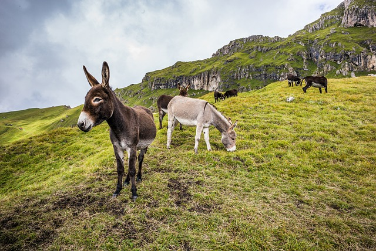
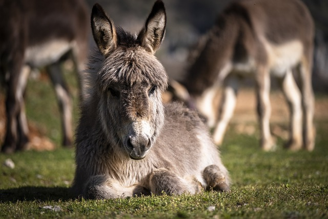

Nomenclature
Traditionally, the scientific name for the donkey is Equus asinus asinus based on the principle
of
priority used for scientific names of animals. However, the
International Commission on Zoological Nomenclature ruled in 2003 that if the domestic
species and the wild species are considered subspecies of one another, the scientific name of the wild
species has priority, even when that subspecies was described after the domestic subspecies. This means
that
the proper scientific name for the donkey is Equus africanus asinus when it is considered a
subspecies and Equus asinus when it is considered a species.
At one time, the synonym ass was the more common term for the donkey. The first recorded use of donkey
was
in either 1784 or 1785. While the word ass has cognates in most other Indo-European languages, donkey is
an
etymologically obscure word for which no credible cognate has been identified. Hypotheses on its
derivation
include the following:
- perhaps from Spanish for its don-like gravity; the donkey was also known as "the King of Spain's
trumpeter" .
- perhaps a diminutive of dun (dull grayish-brown), a typical donkey colour.
- perhaps from the name Duncan.
Ancient beginnings

The genus Equus, which includes all extant equines, is believed to have evolved from Dinohippus,
via the
intermediate form Plesippus. One of the oldest species is Equus simplicidens, described as
zebra-like with a
donkey-shaped head. The oldest fossil to date is ~3.5 million years old from Idaho, USA. The
genus
appears to have spread quickly into the Old World, with the similarly aged Equus livenzovensis
documented from western Europe and Russia.
Molecular phylogenies indicate the most recent common ancestor of all modern equids (members of
the
genus Equus) lived ~5.6 (3.9–7.8) mya. Direct paleogenomic sequencing of a 700,000-year-old
middle
Pleistocene horse metapodial bone from Canada implies a more recent 4.07 Myr before present date for the
most recent common ancestor (MRCA) within the range of 4.0 to 4.5 Myr BP. The oldest divergencies are
the
Asian hemiones (subgenus E. (Asinus), including the kulan, onager, and
kiang), followed by the African zebras (subgenera E. (Dolichohippus), and E.
(Hippotigris)). All other modern forms including the domesticated horse (and many fossil Pliocene
and
Pleistocene forms) belong to the subgenus E. (Equus) which diverged ~4.8 (3.2–6.5) million years
ago.
The ancestors of the modern donkey are the Nubian and Somalian subspecies of African wild ass. Remains
of
domestic donkeys dating to the fourth millennium BC have been found in Ma'adi in Lower
Egypt,
and it is believed that the domestication of the donkey was accomplished long after the domestication of
cattle, sheep and goats in the seventh and eighth millennia BC. Donkeys were probably first domesticated
by
pastoral people in Nubia, and they supplanted the ox as the chief pack animal of that culture.
The
domestication of donkeys served to increase the mobility of pastoral cultures, having the advantage over
ruminants of not needing time to chew their cud, and were vital in the development of long-distance
trade
across Egypt. In the Dynasty IV era of Egypt, between 2675 and 2565 BC, wealthy members of
society were known to own over 1,000 donkeys, employed in agriculture, as dairy and meat animals and as
pack
animals. In 2003, the tomb of either King Narmer or King Hor-Aha (two of the first
Egyptian
pharaohs) was excavated and the skeletons of ten donkeys were found buried in a manner usually used with
high ranking humans. These burials show the importance of donkeys to the early Egyptian state and its
ruler.
Emergence of modern-day donkeys

By the end of the fourth millennium BC, the donkey had spread to Southwest Asia, and the main breeding
centre had shifted to Mesopotamia by 1800 BC. The breeding of large, white riding asses made Damascus
famous, while Syrian breeders developed at least three other breeds, including one preferred by women
for
its easy gait. The Muscat or Yemen ass was developed in Arabia. By the second millennium BC, the donkey
was
brought to Europe, possibly at the same time as viticulture was introduced, as the donkey is associated
with
the Syrian god of wine, Dionysus. Greeks spread both of these to many of their colonies, including those
in
what are now Italy, France and Spain; Romans dispersed them throughout their empire.
The first donkeys came to the Americas on ships of the Second Voyage of Christopher Columbus, and
were landed at Hispaniola in 1495. The first to reach North America may have been two
animals
taken to Mexico by Juan de Zumárraga, the first bishop of Mexico, who arrived there
on
6 December 1528, while the first donkeys to reach what is now the United States may have crossed
the
Rio Grande with Juan de Oñate in April 1598. From that time on they spread northward,
finding
use in missions and mines. Donkeys were documented as present in what today is Arizona in 1679.
By
the Gold Rush years of the 19th century, the burro was the beast of burden of choice of early
prospectors in
the western United States. With the end of the placer mining boom, many of them escaped or were
abandoned, and a feral population established itself.
Miscellaneous facts through history

During World War I John Simpson Kirkpatrick, a British stretcher bearer serving with the
Australian and
New Zealand Army Corps, and Richard Alexander "Dick" Henderson of the New Zealand Medical Corps
used
donkeys to rescue wounded soldiers from the battlefield at Gallipoli.
According to British food writer Matthew Fort, donkeys were used in the Italian Army. The
Mountain
Fusiliers each had a donkey to carry their gear, and in extreme circumstances the animal could be
eaten.
Donkeys have also been used to carry explosives in conflicts that include the war in Afghanistan
and
others.
In some areas domestic donkeys have returned to the wild and established feral populations such as those
of the burro of North America and the Asinara donkey of Sardinia, Italy, both of which
have protected
status. Feral donkeys can also cause problems, notably in environments that have
evolved free of any form of equid, such as Hawaii. In Australia, where there may be 5
million feral
donkeys, they are regarded as an invasive pest and have a serious impact on the environment. They
may compete with livestock and native animals for resources, spread weeds and diseases, foul or damage
watering holes and cause erosion.
In China, donkey meat is considered a delicacy with some restaurants specializing in such dishes,
and
Guo Li Zhuang restaurants offer the genitals of donkeys in dishes. Donkey-hide gelatin is
produced by
soaking and stewing the hide to make a traditional Chinese medicine product.
Donkeys have a notorious reputation for stubbornness, but this has been attributed to a much stronger
sense of self-preservation than exhibited by horses. Likely based on a stronger prey instinct and a
weaker connection with humans, it is considerably more difficult to force or frighten a donkey into
doing something it perceives to be dangerous for whatever reason. Once a person has earned their
confidence they can be willing and companionable partners and very dependable in work.